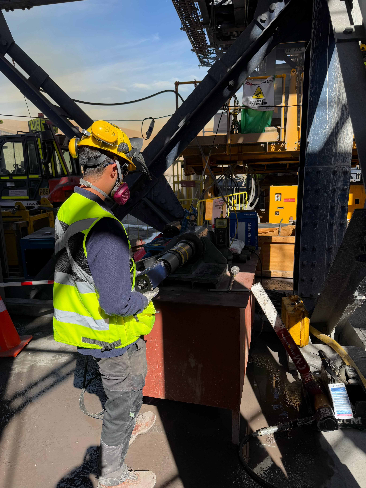
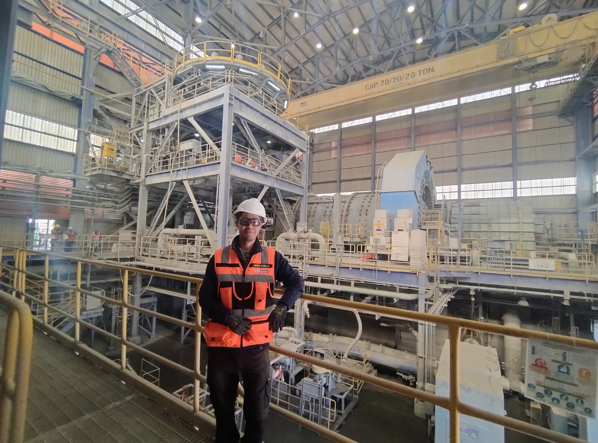
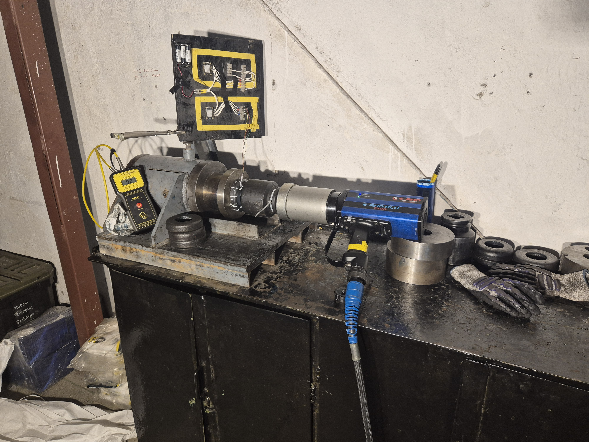
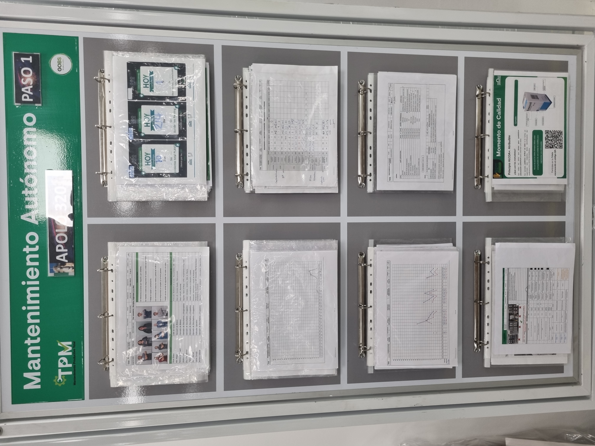
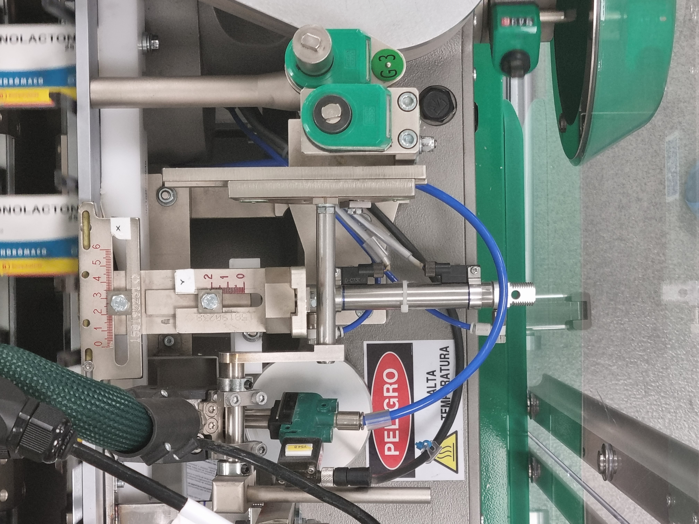
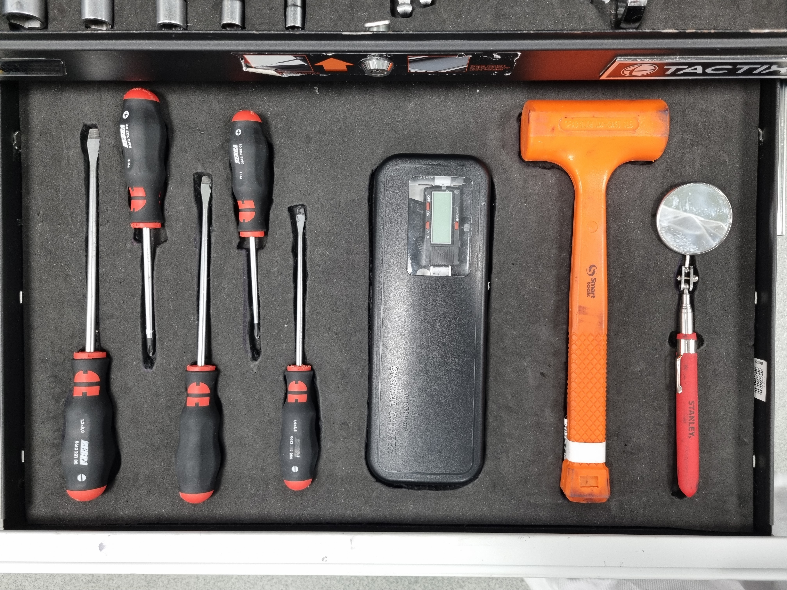
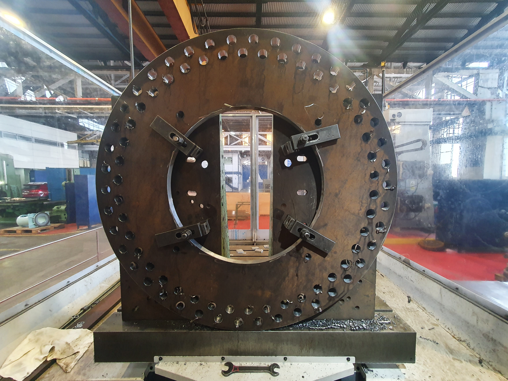
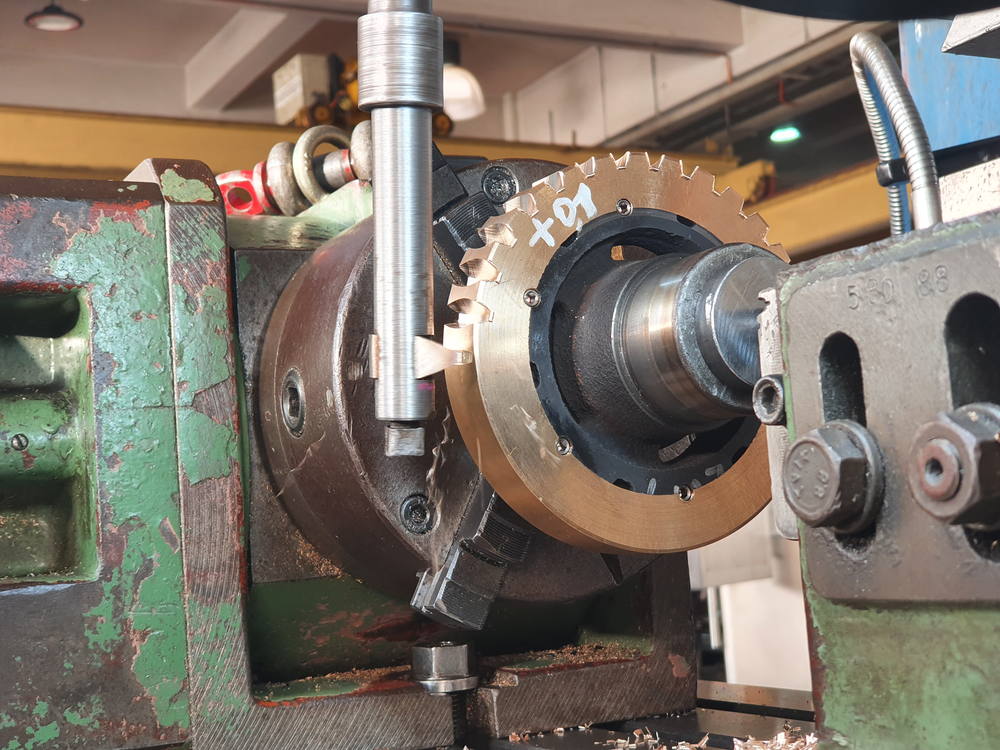
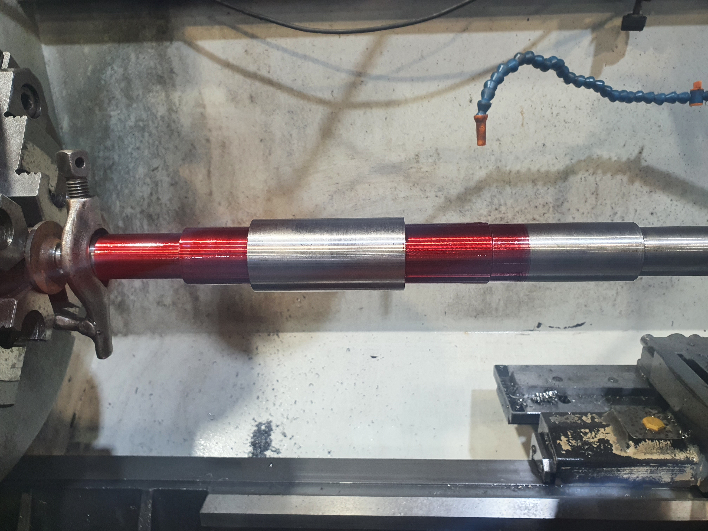

Ingeniero Civil Mecánico de la Universidad Técnica Federico Santa María.
Tengo especial interés en las áreas de diseño, manufactura, maquinaria industrial, procesos productivos y mecánica computacional. Destaco por estar comprometido con identificar oportunidades de mejora e implementarlas en todo proceso con potencial para contribuir en el camino a la excelencia operacional. Impulsado y apasionado por el desarrollo de soluciones técnicas a problemas ingenieriles desafiantes mediante un enfoque analítico y metódico.
Proyectos destacados
Mejora de sensor inalámbrico de tensión de pernos con tecnología de galgas extensiométricas
Propuse, desarrollé y lideré un proyecto de mejora de sensor IoT abarcando el aspecto mecánico de este durante mi trabajo como Analista de Monitoreo IoT en ME Elecmetal. Para aquello, estudié los fundamentos del funcionamiento de galgas extensiométricas y su aplicación en conjunto con puentes de Wheatstone para medir deformaciones en elementos mecánicos. El proyecto evaluó el rediseño geométrico del sensor, la posición de galgas y configuración electrónica del puente para disminuir la incertidumbre en la medición. El comportamiento del sensor se aproximó realizando simulaciones estructurales no lineales con Ansys y evaluando distintos escenarios de carga para obtener el espectro de todas las posibles mediciones. El proceso iterativo de diseño convergió en la selección, fabricación y ensayo de un prototipo que logró evidenciar un aumento significativo en la precisión de la medición.
Determinación numérica y experimental de módulo de elasticidad en materiales porosos basados en superficies mínimas triplemente periódicas
Proyecto de título llevado a cabo en conjunto con el grupo de investigación multidisciplinario B3Mat (Facultad de Ingeniería y Ciencias de la Universidad Adolfo Ibáñez) enfocado en análisis de estructuras usadas en bioingeniería. El objetivo de este trabajo fue predecir el módulo de elasticidad normalizado de distintas estructuras tridimensionales con características únicas para evaluar así su posible uso en aplicaciones biongenieriles como el uso de estos como scaffolds de hueso. Esta parte del proyecto se llevó a cabo mediante simulaciones estruturales con Ansys y se logró determinar el comportamiento de cuatro estructuras seleccionadas bajo un amplio rango de porosidades. La segunda parte del proyecto consistió en ensayar muestras de estas estructuras obtenidas mediante manufactura aditiva para establecer si lo pronosticado por el método numérico se cumple satisfactoriamente. Se analizaron los datos experimentales mediante distintas pruebas estadísticas y se determinó que se cumple el comportamiento entregado por el método numérico y que además existen diferencias significativas de la variable estudiada para las distintas estructuras escogidas para este estudio.
Experiencia laboral
Analista de Monitoreo IoT | ME Elecmetal
Configuración, calibración e implementación de sensores inalámbricos de monitoreo de tensión de pernos con tecnología de galgas extensiométricas en equipos mineros. Propuesta y desarrollo de proyecto de mejora de sensor mediante simulaciones estructurales. Análisis de datos recolectados de manera remota y reportabilidad periódica a cliente. Supervisar y auditar en terreno procedimiento de instalación de elementos de sujeción en molinos de bolas y SAG de faenas mineras.
Molino SAG, mina La Coipa.

Calibración de llaves de torque. Mina Mantoverde.

Molino de bolas, División el Teniente.

Ensayo de prototipo sensor de tensión de pernos.
Practicante | Grünenthal
Realicé mi práctica profesional en Grünenthal, una empresa farmacéutica de origen alemán. Mi trabajo consistió en brindar soporte en el plan de implementación de la metodología TPM (Mantenimiento Productivo Total) en dos líneas piloto del Departamento de Producción. TPM se basa en varios pilares, de los cuales me dediqué al pilar de Mantenimiento Autónomo. El Mantenimiento Autónomo se centra en el operador, quien adquiere conocimientos y responsabilidades sobre la máquina así como un rol más preponderante en las labores de mantención: este se encuentra capacitado para limpiar, lubricar, inspeccionar y proponer mejoras sobre la máquina y el proceso productivo, todo con el fin de contribuir a la disminución de pérdidas (cero paradas, cero defectos, cero accidentes).
Labores realizadas: actualización continua de tableros TPM, registro de parámetros críticos de máquinas de líneas piloto para metodología Centerline, asistencia y evaluación de reuniones MDL, aplicación de 5S en puestos de trabajo de operadores, elaboración de documentación (estándares, diagramas de Pareto, Lecciones de Un Punto, hojas de éxito, entre otros), reuniones periódicas con equipo TPM para seguimiento de metas necesarias para avanzar en la implementación del programa, identificación de oportunidades de mejora y propuestas de implementación.

Tablero TPM. Equipo "Apolo 320".

Parámetros de ajuste de máquina estuchadora.

Kaizen foam usada en la aplicación de 5S.
Practicante | ASMAR
Durante mi práctica industrial en ASMAR estuve bajo supervisión directa de distintos operadores de máquinas herramientas y me desempeñé como su ayudante. Tuve la oportunidad de trabajar con distintos operadores en máquinas distintas, pudiendo conocer y manipular (aunque escasamente debido al riesgo que conlleva para un alumno en práctica) tornos convencionales, tornos CNC, centros de mecanizado CNC y fresadoras.
Labores realizadas: asistencia en cálculo y configuración de parámetros de mecanizado, montaje y alineación de piezas, montaje de herramientas de corte y control dimensional.
Operación de mandrinado sobre cuerpo de hélice de buque.

Mecanizado de pieza de grandes dimensiones.

Mecanizado de corona.

Ensayo de tintas penetrantes sobre eje de acero inoxidable para bomba de incendios de buque.